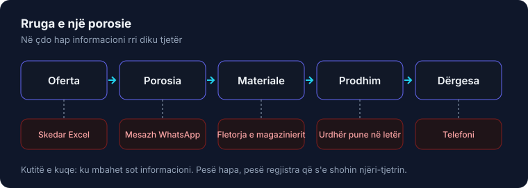
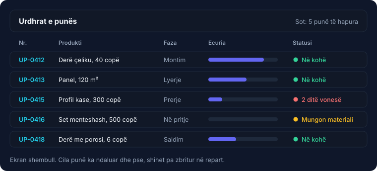
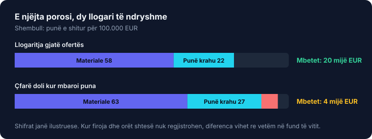

Kur bëhet i domosdoshëm programi për menaxhimin e prodhimit?
Shumica e kompanive prodhuese e nisin punën me Excel, urdhra pune në letër dhe një grup WhatsApp-i. Kur ka pesë a dhjetë porosi, ky rregull nuk ka asnjë të metë; secili e di se ku është çdo gjë. Kur porositë arrijnë në tridhjetë a dyzet, i njëjti rregull fillon t'ju humbë çdo ditë nga pak para, dhe këtë humbje askush nuk e mbledh për t'jua vënë përpara.

Skena të njohura në repart
Në fabrikat që vizitojmë shohim të njëjtat skena përsëri e përsëri. Klienti telefonon dhe pyet për porosinë, kolegu i shitjes thotë „po e shoh dhe ju kthej përgjigje“ dhe zbret në repart. Menteshat për dyert që do të nisen të enjten kanë mbaruar të martën dhe askush nuk e ka vënë re. Pjesët që dolën me defekt në prerje janë lënë në një qoshe, por sa copë janë nuk është shkruar askund.
Edhe planin zakonisht e di një njeri i vetëm, më së shpeshti drejtuesi i prodhimit ose mjeshtri më i vjetër. Kur ai merr një javë leje, punët ecin, por ngadalësohen, sepse nuk ka kush tjetër të vendosë se cila punë do të dalë përpara.
Është edhe çështja e çmimit. Kur pyetni „sa fitojmë nga kjo derë?“, në shumicën e kompanive përgjigjja është çmimi i vitit të kaluar plus rritja që iu shtua. Të dhënat që duhen për të llogaritur koston e vërtetë — sa orë pune shkuan dhe sa material u hodh — nuk janë mbledhur kurrë.

Kush e paguan faturën e kësaj?
Asnjë nga këto probleme, e vetme, nuk e vë kompaninë në vështirësi. Humbja mblidhet kur ndodhin të gjitha bashkë.
Dorëzimi i vonuar
Për porosinë që niset vonë herë paguani gjobë, herë bëni zbritje. Humbja më e madhe vjen më pas: klienti punën e radhës ia jep një kompanie tjetër që e mban datën e premtuar, dhe këtë nuk jua thotë.
Paratë që flenë në magazinë
Kur nuk dihet se cili material, kur dhe sa do të duhet, blerja bëhet me nuhatje. Si përfundim, në magazinë rri llamarinë për gjashtë muaj, por mungon vida që duhet për punën e nesërme. Linja ndalon, dhe vida blihet pa pazar në dyqanin e parë të hekurishteve në qytet.
Firoja që nuk shkruhet
Nëse pjesa që shkon për skrap nuk regjistrohet, nuk e dini dot se në cilën makineri ose në cilin turn është problemi. Në fund të muajit shihni që materiali është pakësuar, por shkakun nuk e gjeni.
Gjithçka ju pyetet juve
Meqë informacioni nuk rri në një sistem, edhe vendimi më i vogël shkon te pronari ose te drejtuesi. Kompania rritet aq sa mund të fusin në një ditë ata një a dy veta.
Për çfarë shërben softueri këtu?
Ajo që quajmë program për menaxhimin e prodhimit është një rregull regjistrimi që i mbledh të dhënat e mësipërme në një vend. Marka dhe ekrani ndryshojnë, por punët që bën janë pak a shumë të njëjta.
Kur porosia miratohet, sistemi e kthen në urdhër pune. Në urdhrin e punës shkruhet sa do të shkojë nga cili material, nëpër cilat procese do të kalojë e me ç'radhë dhe kur do të dorëzohet. Ky informacion futet një herë; më pas nuk rishkruhet në letër apo në mesazh.
Kur operatori fillon dhe mbaron punën, bën një regjistrim nga tableti ose nga lexuesi i barkodit. Sa copë dolën, sa ishin me defekt, pse ndaloi makineria — të gjitha hyjnë në sistem në atë çast. Nuk ka nevojë që dikush në mbrëmje të mbledhë formularët dhe t'i kalojë në Excel.

Meqë urdhrat e hapur të punës dihen, edhe nevoja për materiale del vetvetiu. Sistemi tregon një javë përpara se menteshat do të mbarojnë të martën, dhe blerja porosit sipas kësaj.
Te planifikimi, në një ekran shihet se cila makineri dhe cili ekip është i zënë në cilën ditë. Kur vjen një porosi e re, datën e dorëzimit e jepni duke parë këtë ekran.
Së fundi, kostoja. Meqë materiali i shpenzuar, koha e kaluar dhe firoja i ngarkohen urdhrit të punës, shihni sa ju ka kushtuar çdo porosi. Shembulli më poshtë mund të duket i tepruar, por te kompanitë ku firoja dhe orët shtesë nuk regjistrohen fare dalin diferenca të kësaj madhësie.

„Puna jonë është ndryshe, nuk futet në softuer“
Këtë e dëgjojmë pothuajse në çdo takim dhe nuk është kundërshtim pa vend. Te një kompani që prodhon sipas porosisë, çdo punë është ndryshe nga tjetra. Në prodhimin në seri halli kryesor është shpejtësia. Në punishten që punon me material të porositësit, materiali është i klientit dhe stoku mbahet krejt ndryshe. Kur merrni një paketë të gatshme dhe e vendosni pa e prekur fare, për shkak të këtyre dallimeve sistemi bëhet i papërdorshëm.
Prandaj ne nuk e nisim punën nga softueri. Së pari nxjerrim se si ecën një porosi në kompani, pastaj e ndërtojmë sistemin sipas asaj rrjedhe. Nëse punonjësit detyrohen ta ndryshojnë mënyrën e punës vetëm sepse kështu e do softueri, diçka ka shkuar keq në vendosje.
Kur fillon të mos mjaftojë Excel-i?
Një punishte me tre veta nuk ka nevojë për softuer prodhimi që ditën e parë. Me sa kemi parë ne, Excel-i nuk e mban dot më punën kur fillon njëra nga këto:
- Nëse numri i punëve që ecin njëherësh e ka kaluar atë që mban në kokë një njeri.
- Nëse produkti kalon nëpër disa faza dhe pret mes tyre.
- Nëse nuk e dini sa porosi u nisën me vonesë muajin e kaluar.
- Nëse puna ndalon disa herë në muaj për mungesë materiali.
- Nëse po mendoni për turn të dytë, repart të dytë ose një grup të ri produktesh.
Cili softuer?
Zgjedhjet janë të shumta: ka sisteme ERP me shtrirje të gjerë, ka zgjidhje MES që shohin vetëm repartin e prodhimit, ka paketa të posaçme për sektorin dhe ka aplikacione të shkruara për kompaninë. Cila është e përshtatshme varet nga madhësia e kompanisë dhe nga ajo që prodhon.
Ne nuk përpiqemi të shesim një produkt të caktuar. Te disa kompani kemi vendosur një ERP të përshtatur, te të tjera kemi shkruar një aplikacion të thjeshtë posaçërisht për repartin. Përvoja jonë thotë këtë: një sistem i shtrenjtë që nuk i përshtatet kompanisë vlen më pak se një sistem i lirë, por i vendosur mirë.
Nga të fillohet?
Si punë të parë, ndiqni një porosi të vetme nga fillimi në fund. Ku u shkrua oferta, si iu përcoll porosia repartit, si u kërkua materiali, si u lajmërua dërgesa? Shënoni çdo pikë ku informacioni kaloi në letër, në mesazh ose në kujtesën e dikujt. Në shumicën e kompanive kjo listë mbush një faqe.
Pastaj zgjidhni nga lista një pikë të vetme, atë që ju dhemb më shumë. Zakonisht kjo është ose ndjekja e urdhrave të punës, ose nevoja për materiale. Projektet që përpiqen të ndreqin gjithçka njëherësh mbeten përgjysmë.
Temën e zgjedhur provojeni fillimisht në një linjë të vetme ose në një grup produktesh. Pasi ekipi të fillojë t'i besojë sistemit, shtoni me radhë planifikimin, koston dhe cilësinë.
Pyetje të shpeshta
A duhet edhe për një punishte të vogël?
Edhe në një punishte me pesë veta ia vlen të vihet në rregull ndjekja e porosive dhe e materialeve. Në këtë madhësi nuk duhet një sistem i madh; mjafton një rregull i thjeshtë, i ndërtuar sipas punës.
A do ta përdorin mjeshtrit dhe operatorët?
E përdorin, nëse ekrani është i thjeshtë. Operatorit zakonisht i kërkohen dy prekje: fillo punën, mbaro punën. Te sistemet që nuk përdoren, zakonisht njeriut në repart i është shtuar punë pa i dhënë në këmbim diçka që ia lehtëson punën.
Sa zgjat vendosja?
Varet nga shtrirja. Vënia në punë vetëm e ndjekjes së urdhrave të punës zgjat disa javë. Një sistem që përfshin edhe planifikimin, koston dhe cilësinë shkon në disa muaj. Ne parapëlqejmë të ecim hap pas hapi, që dobia e parë të shihet herët.
A punon bashkë me programin tonë të kontabilitetit?
Në shumicën e rasteve, po. Sistemi i prodhimit mund të vendoset në mënyrë që t'i kalojë të dhëna programit të kontabilitetit që përdorni. Nuk keni nevojë ta ndryshoni programin e kontabilitetit.
Shërbimet tona të lidhura: ERP dhe ndjekje e prodhimit për kompani prodhuese, zgjidhje ERP për biznese të vogla e të mesme, rasti i ndjekjes së prodhimit të parafabrikateve.
Sa nga kapaciteti i tyre përdorin makinat tuaja?
Nga koha e planifikuar, ndalesat dhe sasia e prodhuar llogaritni OEE-në dhe nga vjen më shumë humbja.
Hap kalkulatorinShabllon për planin e prodhimit dhe kapacitetin
Kapaciteti ditor për çdo makinë, dita e përfundimit të porosive dhe punët që do ta humbasin afatin. Shabllon Excel falas.
Shiko shabllonetLe ta shohim bashkë prodhimin tuaj
Le të nxjerrim bashkë rrugën e një porosie tuajën dhe të shohim ku ngec.
Le të flasim për projektin tuaj